Architecture
Technical overview of FormulaCompiler.jl’s unified, zero‑allocation compilation and execution model.
Design Philosophy
Move expensive work to compile time; keep runtime simple and type‑stable.
- Compile‑time specialization: All positions and operations are baked into types
- Type stability: No dynamic dispatch in hot paths
- Memory reuse: Preallocate once; reuse across evaluations
- Position mapping: Address everything by compile‑time positions, not names
System Overview

Unified Compilation Pipeline
The compilation process transforms statistical formulas into optimized evaluators:

Compilation produces a single position‑mapped evaluator (UnifiedCompiled) in four steps:
- Decompose terms → operations
- Parse the schema‑applied formula and convert into primitive ops:
LoadOp,ConstantOp,UnaryOp,BinaryOp,ContrastOp,CopyOp
- Allocate positions
- Assign scratch positions for intermediates and indices for final outputs
- Cache term → position mapping to reuse computed intermediates
- Specialize operation types
- Embed positions and keys as type parameters (e.g.,
LoadOp{:x, 3}) - Convert op vector to a tuple for type‑stable execution
- Package into
UnifiedCompiled
- Store op tuple and a preallocated scratch buffer sized to maximum position
- Provide a callable that writes directly into a user‑supplied output vector
Result: compiled(row_vec, data, row) runs at ~50ns with 0 allocations after warmup.
Operation Set
Primitive operations form an acyclic execution plan:
LoadOp{Column, OutPos}: data[column][row] → scratch[OutPos]ConstantOp{Value, OutPos}: literal → scratch[OutPos]UnaryOp{Func, InPos, OutPos}: f(scratch[InPos]) → scratch[OutPos]BinaryOp{Func, In1, In2, OutPos}: f(scratch[In1], scratch[In2]) → scratch[OutPos]ContrastOp{Column, OutPositions}: categorical expansion → scratch[each(OutPositions)]CopyOp{InPos, OutIdx}: scratch[InPos] → output[OutIdx]
All operation ordering respects dependencies to ensure each input is ready when used.
Zero‑Allocation Execution
Runtime evaluation is pure array indexing with concrete types:
- Scratch:
Vector{Float64}(undef, ScratchSize)allocated once insideUnifiedCompiled - Output: Provided by the caller; must have length
length(compiled) - Execution: Iterate the typed op tuple and update scratch/output in place
Path to zero allocations:
- Preallocate scratch once per compiled formula
- No temporary arrays or dynamic dispatch during execution
- Column access uses direct field lookup from a NamedTuple (column table)
Memory & Scenarios
OverrideVector: Lazy constant vectors for scenario overrides (~32 bytes)DataScenario: Wraps a base dataset plus overrides without copying columnscreate_scenario_grid: Generate large scenario sets efficiently
Integration
- GLM.jl: Works with all linear and generalized linear models
- MixedModels.jl: Automatically extracts fixed‑effects formula via
fixed_effects_form - StandardizedPredictors.jl: ZScore standardization supported at compile time
Extensibility
Add an operation or transformation by composing existing ops during decomposition, or extend model support via dispatch that extracts a StatsModels @formula and delegates to the unified compiler.
Performance Monitoring
Check allocations and timings with BenchmarkTools:
@allocated compiled(row_vec, data, 1) # Expect 0
@benchmark $compiled($row_vec, $data, 1)Future Directions
- Parallel row evaluation for batches
- Expanded function library and transformations
- AD‑friendly derivatives and sensitivity analysis
- Streaming and distributed execution patterns